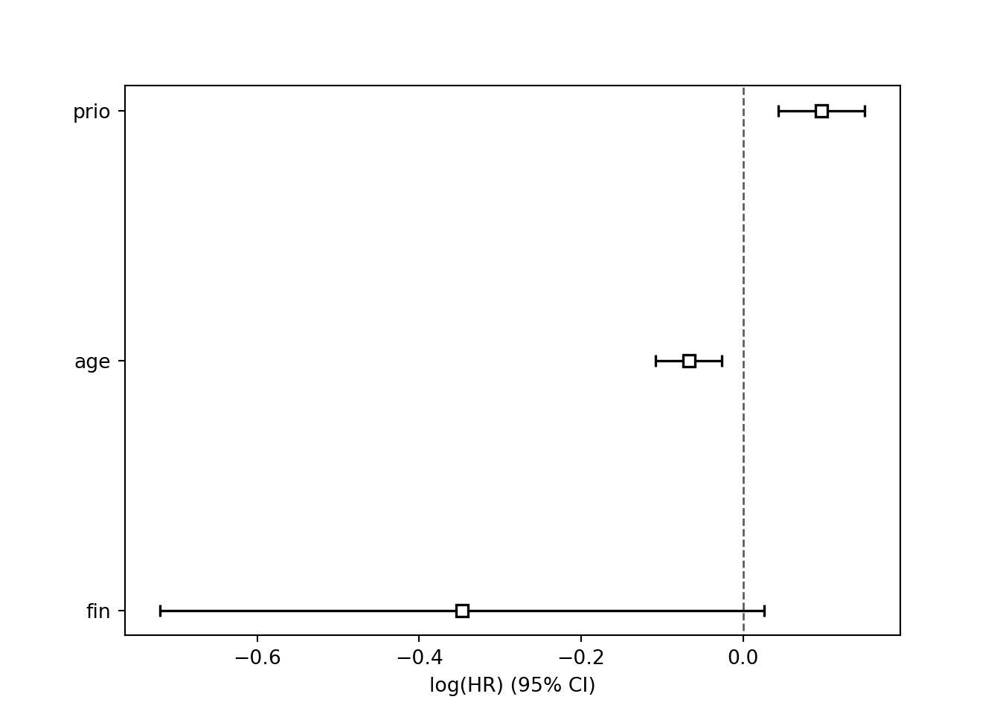

Chapter 6 Extras
6.1 Using Lasso
library(glmnet)## Loading required package: Matrix## Loaded glmnet 4.1-4x=GBSG2 %>% select(horTh,age,menostat,tsize, tgrade, pnodes, progrec, estrec)
y=Surv(time=GBSG2$time,event=GBSG2$cens)
model1<-glmnet(x,y,family="cox")
plot(model1)
x1=x %>% mutate(horTh2=if_else(horTh=="no",0,1),menostat2=if_else(menostat=="Pre",0,1),tgrade2=if_else(tgrade=="I",1,0),tgrade3=if_else(tgrade=="II",1,0)) %>% select(horTh2,age,menostat2,tgrade2,tgrade3,tsize,pnodes,progrec,estrec)
x1<-as.matrix(x1)
set.seed(1287)
cvfit <- cv.glmnet(x1, y, family = "cox", type.measure = "C")
plot(cvfit)
plot(cvfit)
cvfit$lambda.min## [1] 0.02673542cvfit$lambda.1se## [1] 0.09834302coef(model1,s=0.03)## 8 x 1 sparse Matrix of class "dgCMatrix"
## 1
## horTh -0.176785737
## age .
## menostat .
## tsize 0.004002226
## tgrade 0.216889004
## pnodes 0.047722334
## progrec -0.001325963
## estrec .coef(model1,s=0.1)## 8 x 1 sparse Matrix of class "dgCMatrix"
## 1
## horTh .
## age .
## menostat .
## tsize .
## tgrade 0.0153489911
## pnodes 0.0362199648
## progrec -0.0001341727
## estrec .### Uses Breslow for ties (not able to do Efron...yet)Can also do repeated events and stratified analysis, see https://glmnet.stanford.edu/articles/Coxnet.html.
6.2 Decision Trees
library(rpart)
library(partykit)## Loading required package: grid## Loading required package: libcoin## Loading required package: mvtnormtree.surv<- ctree(Surv(time,cens) ~ . ,data=GBSG2)
tree.surv##
## Model formula:
## Surv(time, cens) ~ horTh + age + menostat + tsize + tgrade +
## pnodes + progrec + estrec
##
## Fitted party:
## [1] root
## | [2] pnodes <= 3
## | | [3] horTh in no: 2093.000 (n = 248)
## | | [4] horTh in yes: Inf (n = 128)
## | [5] pnodes > 3
## | | [6] progrec <= 20: 624.000 (n = 144)
## | | [7] progrec > 20: 1701.000 (n = 166)
##
## Number of inner nodes: 3
## Number of terminal nodes: 4plot(tree.surv)
predict(tree.surv, newdata = GBSG2[1:2,], type = "node")## 1 2
## 3 7predict(tree.surv, newdata = GBSG2[1:2,], type = "response")## 1 2
## 2093 1701This is using conditional trees in the partykit package in R.
6.3 Random Forest
library(randomForestSRC)##
## randomForestSRC 3.1.1
##
## Type rfsrc.news() to see new features, changes, and bug fixes.
## ##
## Attaching package: 'randomForestSRC'## The following object is masked from 'package:Hmisc':
##
## imputelibrary(ggRandomForests)## Loading required package: randomForest## randomForest 4.7-1## Type rfNews() to see new features/changes/bug fixes.##
## Attaching package: 'randomForest'## The following object is masked from 'package:dplyr':
##
## combine## The following object is masked from 'package:ggplot2':
##
## marginsurv.rf <- rfsrc(Surv(time,cens) ~ . ,data=GBSG2,importance = TRUE,splitrule="logrankscore")
print(surv.rf$importance)## horTh age menostat tsize tgrade pnodes
## 0.010663986 0.108471394 0.005983135 0.049735135 0.053453348 0.094152276
## progrec estrec
## 0.095075443 0.046412768print(surv.rf)## Sample size: 686
## Number of deaths: 299
## Number of trees: 500
## Forest terminal node size: 15
## Average no. of terminal nodes: 30.148
## No. of variables tried at each split: 3
## Total no. of variables: 8
## Resampling used to grow trees: swor
## Resample size used to grow trees: 434
## Analysis: RSF
## Family: surv
## Splitting rule: logrankscore *random*
## Number of random split points: 10
## (OOB) CRPS: 0.16637673
## (OOB) Requested performance error: 0.30355211imp.val=subsample(surv.rf)##
|
| | 0%
|
|= | 1%
|
|= | 2%
|
|== | 3%
|
|=== | 4%
|
|==== | 5%
|
|==== | 6%
|
|===== | 7%
|
|====== | 8%
|
|====== | 9%
|
|======= | 10%
|
|======== | 11%
|
|======== | 12%
|
|========= | 13%
|
|========== | 14%
|
|========== | 15%
|
|=========== | 16%
|
|============ | 17%
|
|============= | 18%
|
|============= | 19%
|
|============== | 20%
|
|=============== | 21%
|
|=============== | 22%
|
|================ | 23%
|
|================= | 24%
|
|================== | 25%
|
|================== | 26%
|
|=================== | 27%
|
|==================== | 28%
|
|==================== | 29%
|
|===================== | 30%
|
|====================== | 31%
|
|====================== | 32%
|
|======================= | 33%
|
|======================== | 34%
|
|======================== | 35%
|
|========================= | 36%
|
|========================== | 37%
|
|=========================== | 38%
|
|=========================== | 39%
|
|============================ | 40%
|
|============================= | 41%
|
|============================= | 42%
|
|============================== | 43%
|
|=============================== | 44%
|
|================================ | 45%
|
|================================ | 46%
|
|================================= | 47%
|
|================================== | 48%
|
|================================== | 49%
|
|=================================== | 50%
|
|==================================== | 51%
|
|==================================== | 52%
|
|===================================== | 53%
|
|====================================== | 54%
|
|====================================== | 55%
|
|======================================= | 56%
|
|======================================== | 57%
|
|========================================= | 58%
|
|========================================= | 59%
|
|========================================== | 60%
|
|=========================================== | 61%
|
|=========================================== | 62%
|
|============================================ | 63%
|
|============================================= | 64%
|
|============================================== | 65%
|
|============================================== | 66%
|
|=============================================== | 67%
|
|================================================ | 68%
|
|================================================ | 69%
|
|================================================= | 70%
|
|================================================== | 71%
|
|================================================== | 72%
|
|=================================================== | 73%
|
|==================================================== | 74%
|
|==================================================== | 75%
|
|===================================================== | 76%
|
|====================================================== | 77%
|
|======================================================= | 78%
|
|======================================================= | 79%
|
|======================================================== | 80%
|
|========================================================= | 81%
|
|========================================================= | 82%
|
|========================================================== | 83%
|
|=========================================================== | 84%
|
|============================================================ | 85%
|
|============================================================ | 86%
|
|============================================================= | 87%
|
|============================================================== | 88%
|
|============================================================== | 89%
|
|=============================================================== | 90%
|
|================================================================ | 91%
|
|================================================================ | 92%
|
|================================================================= | 93%
|
|================================================================== | 94%
|
|================================================================== | 95%
|
|=================================================================== | 96%
|
|==================================================================== | 97%
|
|===================================================================== | 98%
|
|===================================================================== | 99%
|
|======================================================================| 100%par(cex.axis = 2.0, cex.lab = 2.0, cex.main = 2.0, mar = c(6.0,17,1,1), mgp = c(4, 1, 0))
plot(imp.val, xlab = "Variable Importance (x 100)", cex = 1.2)
newdat1=GBSG2[1:2,-c(9:10)]
pred.surv=predict(surv.rf,newdata=newdat1)
graph.surv=cbind.data.frame(c(rep(1,length(pred.surv$survival[1,])),rep(2,length(pred.surv$survival[2,]))),c(pred.surv$time.interest,pred.surv$time.interest),c(pred.surv$survival[1,],pred.surv$survival[2,]))
colnames(graph.surv)=c("Person","Time","Survival")
ggplot(graph.surv,aes(x=Time,y=Survival,group=Person))+geom_line()For more information, see https://www.randomforestsrc.org/articles/survival.html, https://www.randomforestsrc.org/index.html for the Survival Random Forest or https://cran.microsoft.com/snapshot/2014-12-19/web/packages/ggRandomForests/vignettes/randomForestSurvival.pdf for nice visuals using the ggRandomForest package.